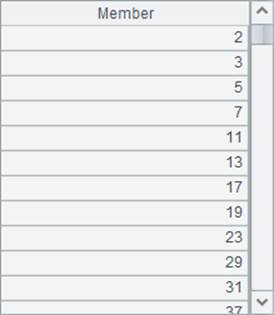

l Problem
Sieve method is an old way to find all the prime numbers smaller than a certain natural number N (N>1). It works like this. First number 1 is canceled from the sequence of N natural numbers, in which the minimum prime number is 2. Next all numbers divisible by 2 are canceled while keeping number 2. Now 3, the first number not canceled, is a prime number. Then all the numbers divisible by 3 are canceled. Now 5, the first number not cancelled, is a prime number. Then cancel all numbers divisible by 5. Going on like this, one can find that the next adjacent number after each sieving is inevitable a prime. In this way, all composite numbers smaller than N will be sift out while all prime numbers smaller than N will remain.
Please code this algorithm in esProc to find out all the prime numbers within 10,000.
l Tip
General steps: Declare an ordered sequence from 1 to 10,000 and cancel 1. Next run a loop from the minimum prime number 2 and assign 0 to the numbers divisible by the current number, while keeping the current number. The numbers in the final sequence that are not 0 are all the prime numbers within 10,000.
1. Define an increasing sequence from 1 to 10,000.
2. Assign 0 to the member whose value is 1.
3. Loop through the increasing sequence from 2, and assign 0 to the numbers divisible by the current number in the loop body.
4. The numbers remained that are not 0 are prime numbers.
l Code
|
|
A |
B |
C |
|
|
1 |
10000 |
|
|
|
|
2 |
=to(A1) |
|
|
Generate a sequence from 1 to 10,000. |
|
3 |
>A2(1)=0 |
|
Assign 0 to members whose value is 1. |
|
|
4 |
for A2 |
if A4>0 |
Loop Sequence A2. If the current number is not 0, it indicates that the number is prime number. Set as 0 all the numbers behind it that can be exactly divided by this number. |
|
|
5 |
|
|
=A1.step(A4,A4).to(2,) |
|
|
6 |
|
|
>A2(C5)=0 |
|
|
7 |
=A2.select(~>0) |
|
The final remaining numbers that are not 0 are prime numbers. |
l Result
